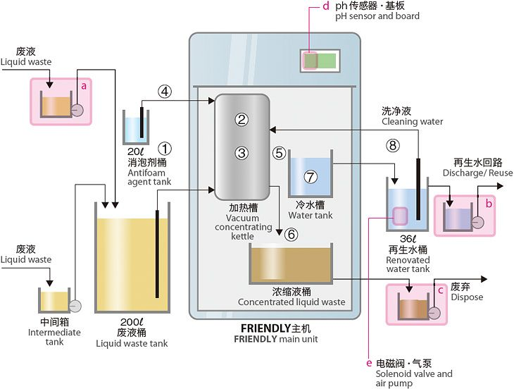
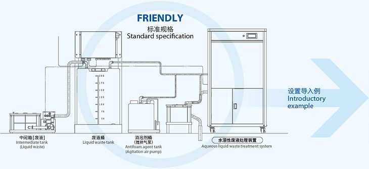
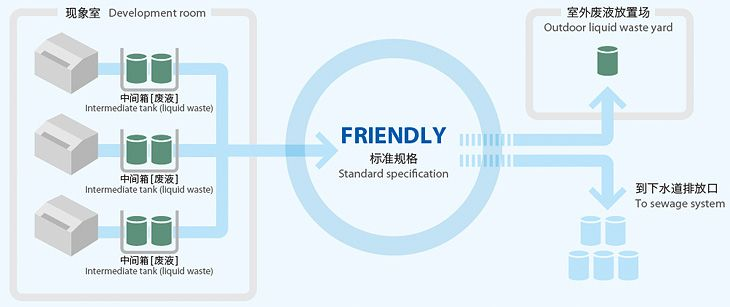
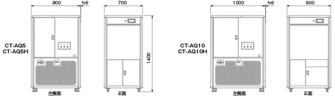

FRIENDLY Series (CT-AQ5 / CT-AQ10)Water-Soluble Waste Fluid (Wastewater) Treatment System

FRIENDLY Series (CT-AQ5 / CT-AQ10)
Water-Soluble Waste Fluid (Wastewater) Treatment SystemData for this model comes from the old website; whether to keep it listed is pending Yuan Hua's confirmation.
Equipment overview
"Environmental protection" is a weighty subject for the future of both society and the planet. The phrase may have a pleasant ring to it, but for manufacturers it means, first, a sense of responsibility and, second, a heavy financial burden.
Of these burdens, the cost of collecting and treating the waste fluid generated in production is the most important. Through its FRIENDLY system, CosmoTech takes concrete action to support companies committed to environmental responsibility on three fronts: environmental protection, safety and economics.
- Lower environmental impact
- Lower costs
- No foul odor
- Less water use
- Lower treatment energy
- Lower CO2 emissions
- No open flame
- Lighter workload
Source: CosmoTech (cosmotech-jp)
Drastically reduces waste fluid discharge
Previously, the waste fluid generated at production plants was sent directly to waste treatment contractors for disposal.
By adopting FRIENDLY, a plant can greatly reduce the volume of waste fluid that needs outside treatment and so lower its costs.

High-efficiency treatment
- A high concentration ratio sharply cuts waste fluid treatment costs
Actual results: water-soluble waste fluid can be concentrated to as little as 1/20 of its volume (subject to actual machine tests on the specific waste fluid) - Handles all kinds of water-soluble waste fluids
Treatment track record: PS plate developer, water-based varnish cleaning waste fluid, dampening solution waste, flexo printing waste fluid, cutting fluid (water-soluble), water-based paint waste fluid, food processing waste fluid, etc.
Convenience and economy
- Requires only small amounts of electricity and antifoaming agent
- 24-hour continuous automatic operation lightens the workload
- Automatic cleaning of the concentration vessel
- Touch panel for easier operation
- Compact design fits almost anywhere
FRIENDLY system structure

① Waste fluid is drawn in from the waste fluid drum.
② The concentration vessel is depressurized.
③ The concentration vessel is heated and the fluid boils at a low temperature.
④ Antifoaming agent is added to prevent foaming during boiling.
⑤ The vapor produced flows to the refrigeration unit, where it condenses into reclaimed water.
⑥ The remaining concentrated waste fluid is concentrated several more times in the concentration vessel, then stored in the concentrate drum.
⑦ Reclaimed water is held temporarily in the cold water tank inside the unit, then transferred to the external reclaimed water drum.
⑧ During automatic cleaning, reclaimed water from outside the unit is drawn back into the concentration vessel.
Options
a) Waste fluid intermediate tank
b) Reclaimed water intermediate tank
c) Concentrated waste fluid intermediate tank
d) Reclaimed water pH display
e) Reclaimed water pH control
For best results — installation layout

Installation examples
Automation diagram
The automated design lightens the workload of shop-floor operators and further helps cut costs.

Specifications
| FRIENDLY | Heater type | Heat pump type | Heater type | Heat pump type |
|---|---|---|---|---|
| Model | CT-AQ5 | CT-AQ5H | CT-AQ10 | CT-AQ10H |
| Treatment capacity | 5L/h | 10L/h | ||
| Power supply | 3-phase 200 V 50/60 Hz | |||
| Electrical capacity / current | Approx. 7.2 kVA / approx. 20.7 A |
Approx. 4.4 kVA / approx. 12.7 A |
Approx. 10.6 kVA / approx. 30 A |
Approx. 5.2 kVA / approx. 14.9 A |
| Treatment method | Vacuum distillation | |||
| Applicable waste fluids | Water-soluble waste fluid | |||
| Main unit dimensions (W×D×H) mm |
700×900×1400mm | 800×1000×1400mm | ||
| Weight | Approx. 240 kg (in operation: approx. 280 kg) | Approx. 260 kg (in operation: approx. 320 kg) | ||
| Operating conditions | Ambient temperature: 5–35 °C; humidity: 0–60% (non-condensing) | |||
| Standard accessories | Waste fluid drum (200 L) ×1, antifoam drum (20 L) ×1 | |||
| Concentrate drum (18 L) ×2, reclaimed water drum (35.7 L) ×1 | ||||
| Waste fluid intermediate tank ×1 | ||||
| Other consumables | Antifoaming agent (please use our recommended antifoaming agent) | |||
Swipe sideways to see the full table
Options
- Waste fluid intermediate tank (additional)
- Reclaimed water intermediate tank
- Concentrate intermediate tank
- Reclaimed water pH display
- Reclaimed water pH control (pH adjustment by aeration)
*Must be selected together with the reclaimed water pH display.
Power-saving heat pump type
Uses half the power of earlier models
Heater type
CT-AQ5
Approx. 40%
DOWN
Heat pump type
CT-AQ5H
Heater type
CT-AQ10
Approx. 63%
DOWN
Heat pump type
CT-AQ10H
Outline dimensions

Other Distributed Models
 01Popular ModelWater-Soluble Waste Fluid Treatment System
01Popular ModelWater-Soluble Waste Fluid Treatment SystemFRIENDLY CT-AQ25H
- Treatment capacity
- 25 L/h
- Applicable to
- Water-soluble waste fluid
 02Water-Soluble Waste Fluid Treatment System
02Water-Soluble Waste Fluid Treatment SystemFRIENDLY CT-AQ100H / 125H
- Treatment capacity
- 100–150 L/h
- Applicable to
- Water-soluble waste fluid
 03Large-Scale MVR Waste Fluid Treatment System
03Large-Scale MVR Waste Fluid Treatment SystemMASTER Line
- Treatment capacity
- Up to 3,850 L/h
- Applicable to
- All water-soluble waste fluids
Evaluating waste fluid reduction?Start by telling us your situation
- Roughly how much waste fluid do you generate per month?
- Type of waste fluid: cutting fluid, cleaning wastewater, plating waste fluid or something else?
Share the type and volume of waste fluid you generate and how you treat it now, and the Yuan Hua team will help evaluate suitable equipment and how to implement it.
Yuan Hua Oil Co., Ltd.
- Tel
- 04-2335-5559
- Fax
- 04-2335-8886
- Hours
- Mon–Fri 08:00 – 17:00